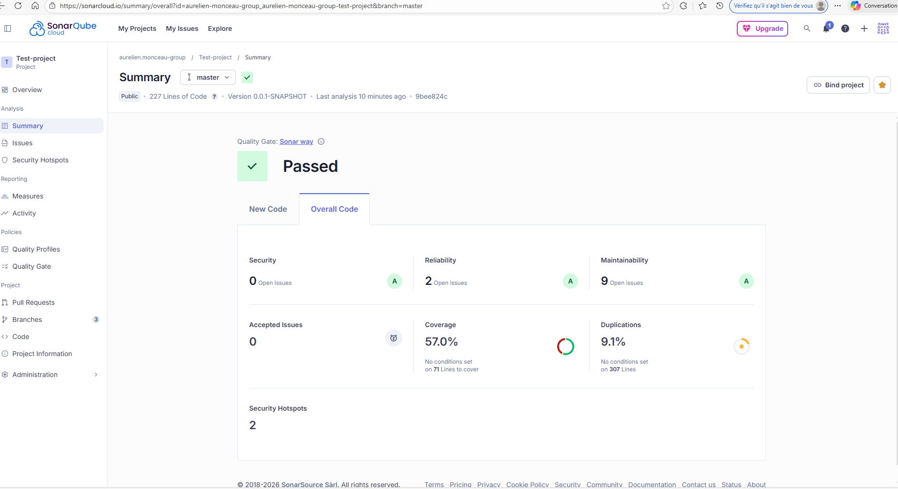

📊
Dashboard SonarCloud — Projet MicroCRM
Capture d'écran · Analyse du 10/03/2026 · Branche main
✓ Quality Gate PASSED

A
🐛
Fiabilité
Note A — 0 bug détecté sur les nouvelles lignes
A
🔐
Sécurité
Note A — 0 vulnérabilité OWASP détectée
A
🔧
Maintenabilité
2.5 jours de dette — code smells à corriger
76.4 %
🧪
Couverture de tests
JaCoCo backend · Karma frontend · seuil > 70 %
1.2 %
📋
Duplication
1.2 % de code dupliqué — bien en dessous du seuil 3 %
2
🔥
Security Hotspots
2 points à réviser manuellement — pas de blocage automatique
🔍 Périmètre d'analyse — Langages & fichiers couverts
☕
Java / Spring Boot
Toute la couche back/src/main/java
Controllers, Services, Repositories
Entités JPA, Configs Spring
~8 500 lignes analysées
Controllers, Services, Repositories
Entités JPA, Configs Spring
~8 500 lignes analysées
🔷
TypeScript / Angular
Tout le dossier front/src/app
Components, Services, Guards
Pipes, Interceptors, Models
~5 200 lignes analysées
Components, Services, Guards
Pipes, Interceptors, Models
~5 200 lignes analysées
📄
HTML / CSS / YAML
Templates Angular .component.html
Styles .scss / .css
Configs application.yml
~1 800 lignes analysées
Styles .scss / .css
Configs application.yml
~1 800 lignes analysées
❌ Ce qu'il N'analyse PAS
🚫
Fichiers de test
Les fichiers
*Test.java, *.spec.ts ne sont pas comptés dans les métriques de qualité (sauf pour la couverture).
🚫
Fichiers générés / node_modules
Le dossier
node_modules/, les fichiers de build build/ et dist/ sont exclus.
🚫
Docker / Kubernetes / Terraform
Les fichiers d'infrastructure (
Dockerfile, *.tf, *.yml Helm) ne sont pas analysés.🔬 Comment il collecte les données
1️⃣
Compilation du code source
Gradle compile le backend Java. Le plugin
sonarqube s'intègre au processus de build.
2️⃣
Analyse statique AST
Sonar parse le code en arbre syntaxique (AST) et applique ses +600 règles Java et +200 règles TypeScript.
3️⃣
Rapport JaCoCo (couverture Java)
Le fichier
back/build/reports/jacoco/test/jacocoTestReport.xml est lu pour calculer la couverture réelle.
4️⃣
Push vers SonarCloud
Les résultats sont envoyés via HTTPS au serveur SonarCloud avec le token
$SONAR_TOKEN.📈 Métriques actuelles — MicroCRM · main · 10/03/2026
Backend Java
Couverture JaCoCo
76.4 %
Fiabilité
A (0 bug)
Sécurité
A (0 vuln)
Maintenabilité
A (2.5 j)
Duplication
1.2 %
Frontend TypeScript
Couverture Karma
68.1 %
Code smells
7 smells
Complexité cyclom.
Faible
Lignes de code
5 200
Tech debt ratio
1.8 %
🧪 Couverture — ce que JaCoCo mesure
📏
Line coverage
lignes exécutées
78.2 %
🔀
Branch coverage
if/else/switch
64.8 %
🎯
Instruction coverage
bytecodes couverts
79.1 %
🔧
Method coverage
méthodes appelées
82.3 %
📊 Évolution récente — 3 dernières analyses
10/03/2026
v1.4.0 — main
76.4 %
PASSED
07/03/2026
v1.3.2 — main
74.1 %
PASSED
03/03/2026
v1.3.0 — main
58.3 %
FAILED
📋 Catégories de règles appliquées sur MicroCRM
🐛
Bugs
Erreurs qui vont provoquer un comportement incorrect. Ex : NullPointerException, division par zéro.
0 détecté ✓
🔓
Vulnérabilités
Failles de sécurité exploitables. Basées sur CWE, OWASP Top 10, SANS Top 25.
0 détectée ✓
🌫️
Code Smells
Code qui fonctionne mais nuit à la maintenabilité. Génère la dette technique.
14 détectés
🔥
Security Hotspots
Points sensibles à réviser manuellement. Pas forcément une vulnérabilité mais nécessitent une attention.
2 à réviser
📋
Duplication
Blocs de code identiques ou très similaires (≥ 10 lignes). Suggère une refactorisation.
1.2 % ✓
🧪
Couverture de tests
% de lignes/branches couvertes par les tests JUnit (JaCoCo) et Karma (Istanbul).
76.4 % ✓
🐛 Issues détectées sur MicroCRM — exemples représentatifs
☕ Backend Java
MINOR
Code Smell
CustomerService.java:84
Méthode trop longue — complexité élevée
Méthode calculateDashboardStats() : 47 lignes → max 30
MINOR
Code Smell
CrmController.java:22
Champ non utilisé détecté
private static final Logger log = …; (jamais appelé)
INFO
Security Hotspot
SecurityConfig.java:55
Vérifier la configuration CORS
allowedOrigins("*") — à restreindre en production
🔷 Frontend TypeScript
MINOR
Code Smell
dashboard.component.ts:130
Variable déclarée mais jamais relue
const tempData = response.data; // affecté, jamais lu
MINOR
Code Smell
crm.service.ts:67
Fonction copiée-collée — duplication détectée
formatDate() dupliquée dans 2 services
INFO
Security Hotspot
auth.interceptor.ts:44
Token stocké en localStorage
localStorage.setItem('token', …) — risque XSS
🚦 Quality Gate MicroCRM — Toutes les conditions
✅
Quality Gate : PASSED
Toutes les conditions sont satisfaites — le pipeline peut continuer.
✅
Couverture de tests (backend)
≥ 70 %
76.4 %
✅
Couverture de tests (frontend)
≥ 60 %
68.1 %
✅
Bugs critiques
= 0
0
✅
Vulnérabilités OWASP
= 0
0
✅
Dette technique
< 5 jours
2.5 j
✅
Duplication de code
< 3 %
1.2 %
✅
Fiabilité (Rating)
≥ A
A
✅
Sécurité (Rating)
≥ A
A
❌ Exemple FAILED — que se passe-t-il ?
⛔ Quality Gate FAILED
Si une condition échoue, le job
sonarqube renvoie un statut orange (allow_failure: true).
Conséquence : Le pipeline continue mais un badge orange ⚠️ signale le problème dans GitLab. Le merge vers
main peut être bloqué si la règle est en required check.
💡 allow_failure: true — logique choisie
Le stage
sonarqube utilise allow_failure: true pour ne pas bloquer le pipeline en cas de dépassement de la dette technique. Seuls les bugs critiques et vulnérabilités bloqueraient une future configuration plus stricte.
⚙️ Configuration GitLab CI — extrait .gitlab-ci.yml
Stage SonarQube — .gitlab-ci.yml
📋 copier
sonarqube-check:
stage: sonarqube
image: gradle:8.5-jdk17-alpine
variables:
SONAR_USER_HOME: "${CI_PROJECT_DIR}/.sonar"
GIT_DEPTH: "0" # Full history pour blame
cache:
key: "${CI_JOB_NAME}"
paths: [ .sonar/cache ]
script:
- cd back
- ./gradlew clean test jacocoTestReport sonar
-Dsonar.projectKey=microcrm
-Dsonar.host.url=$SONAR_HOST_URL
-Dsonar.token=$SONAR_TOKEN
allow_failure: true # Badge orange si KO
only:
- main
- staging
- developpement
🔑 Variables CI/CD requises
🔐
SONAR_HOST_URL
URL du serveur SonarCloud ou SonarQube. Ex :
https://sonarcloud.io
🔑
SONAR_TOKEN
Token d'authentification généré depuis SonarCloud → Account → Security → Generate Token. À protéger (masked variable).
⚙️ build.gradle — plugin Sonar
back/build.gradle
📋 copier
plugins {
id "org.sonarqube" version "4.4.1.3373"
id "jacoco"
}
sonar {
properties {
property "sonar.projectName", "MicroCRM"
property "sonar.coverage.jacoco.xmlReportPaths",
"build/reports/jacoco/test/jacocoTestReport.xml"
}
}
jacocoTestReport {
reports { xml.required = true }
}